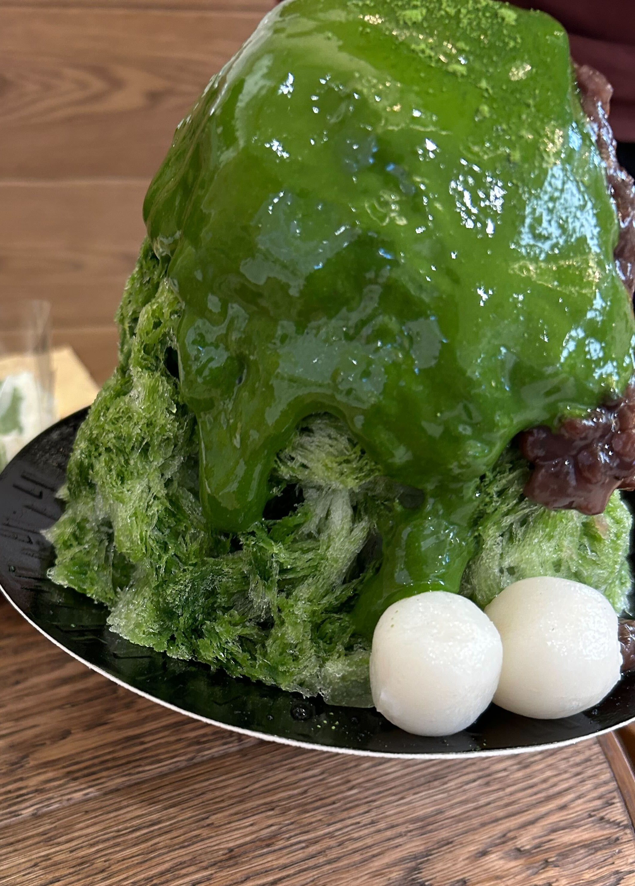
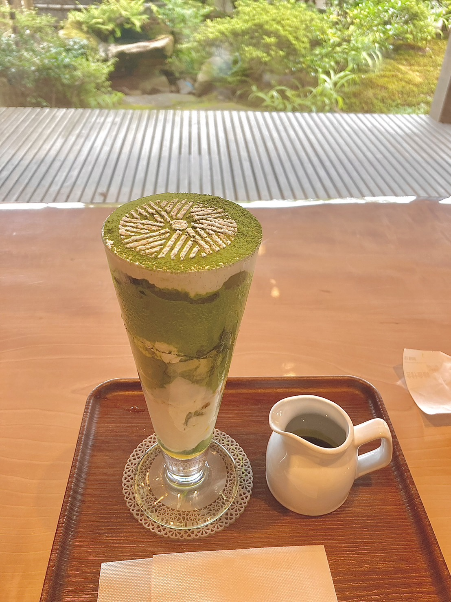
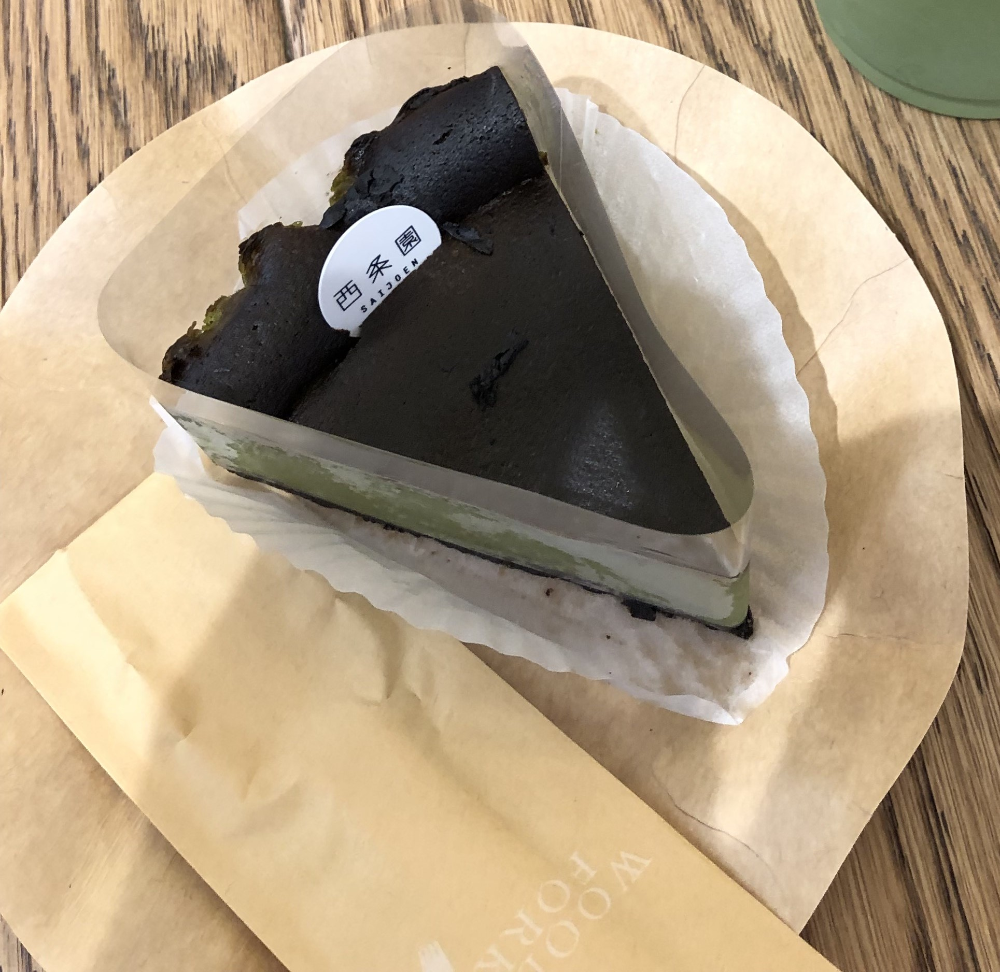

西条園のスイーツまとめ
世界の抹茶市場をリードしてきた株式会社あいやが展開する抹茶を通じて今までにない体験を創造するブランドが「西条園」です。今回はそんな西条園の抹茶スイーツを紹介していきます。ぜひとも最後までご覧ください。
抹茶金時氷(季節商品)

抹茶の風味が広がる氷と、甘さ控えめの金時豆が絶妙なバランスを生み出す一品です。暑い日に食べると、体の芯から冷えること間違いなしです。季節商品となっていまして、アクセスマップで示す店舗の中では、西尾本店にはありませんのでご注意ください。
極 抹茶カフェ

高級抹茶4種類が、アイス、ソフト、ゼリー、チョコレートなどの食材と絡み合うパフェです。濃い抹茶の後には、ミカンソースが口の中をさっぱりさせるので、最後まで飽きることがないです。しかし、西尾本店にしか売っていません。
抹茶バスクチーズケーキ

筆者が、西条園で最もお勧めするスイーツです。抹茶がふんだんに使用されており、濃い抹茶の旨味、風味を味わえます。それほど、抹茶の苦味が押し出されている商品ではなく、濃い抹茶の良さが押し出されたケーキとなっています。これも、抹茶金時と同じく、西尾本店にはありませんのでご注意ください。
アクセスマップ
営業時間;11:00~20:00
定休日;不定休(大名古屋ビルディングに準ずる)
[電車でお越しの方]
地下鉄東山線 名古屋駅より徒歩1分、JR名古屋駅・近鉄名古屋駅・名鉄名古屋駅より徒歩3分
営業時間;9:30~18:30
定休日;第一木曜日
[電車でお越しの方]
名鉄西尾線「西尾駅」下車、タクシーで約7分、JR・東海道新幹線「三河安城駅」下車、タクシーで約20分
営業時間;10:00~20:30
定休日;不定休(イオンモール豊川に準ずる)
[電車でお越しの方]
名鉄豊川線「八幡駅」より徒歩約10分